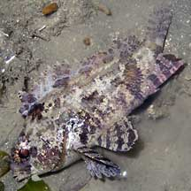
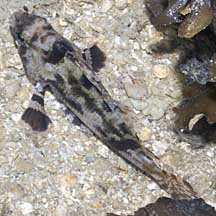
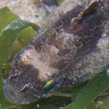
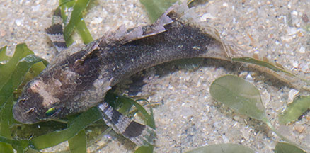
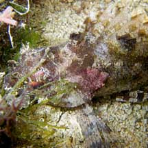
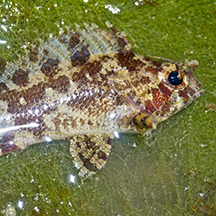

|
|
| fishes text index | photo index |
| Phylum Chordata > Subphylum Vertebrata > fishes |
| False
scorpionfish Centrogenys vaigiensis Family Centrogenyidae updated Sep 2020
Where seen? This small scorpionfish wannabe is commonly encountered on many of our shores in the North and South, among coral rubble and seagrass areas. Masters of disguise, some can also be very small. Most stay motionless and thus do not betray their presence through movement. Patience and a keen eye is required to spot one. Elsewhere, it is found in brackish estuaries and silty coastal reefs. What are false scorpionfishes? This species was previously placed in Family Serranidae (groupers) and now is the only member of the Family Centrogenyidae (false scorpionfishes). True scorpionfishes belong to the Family Scorpaenidae. Features: Those seen usually about 4-10cm, grows to about 15cm. A large head with large eyes. In various camouflaging colours and patterns. Like true scorpionfishes, the false scorpionfish has sharp dorsal spines that can poke inquisitive fingers. The false scorpionfish lacks true venom glands, though the spines can still cause wounds. Sometimes mistaken for stonefishes and scorpionfishes. To distinguish it from true scorpionfishes, the false scorpionfish does not have spines around its mouth, the nostrils have large fringed flaps, and the dorsal fin starts well behind the eyes. Here's more on how to tell apart fishes that look like stones. |
 Sentosa, Oct 03 |
 Chek Jawa, Jun 03 |
 Sisters Island, Sep 10 |
 It has nose flaps! No spines on the head Dorsal fins start well behind the eyes. |
 Changi, Jun 06 |
| What does it eat? It eats small
fishes, shrimps and crabs, hunting during the day. Human uses: Sometimes harvested for the aquarium trade. |
| False scorpionfishes on Singapore shores |
On wildsingapore
flickr
|
| Other sightings on Singapore shores |
 Pulau Jong, May 10 Photo shared by Toh Chay Hoon on her blog. |
 Terumbu Pempang Kecil, Jan 15 Photo shared by Juria Toramae on facebook. |
| Terumbu Bemban,
Apr 11 false scorpion fish @tBembanBesar 22Apr2011 from SgBeachBum on Vimeo. |
Links
References
|